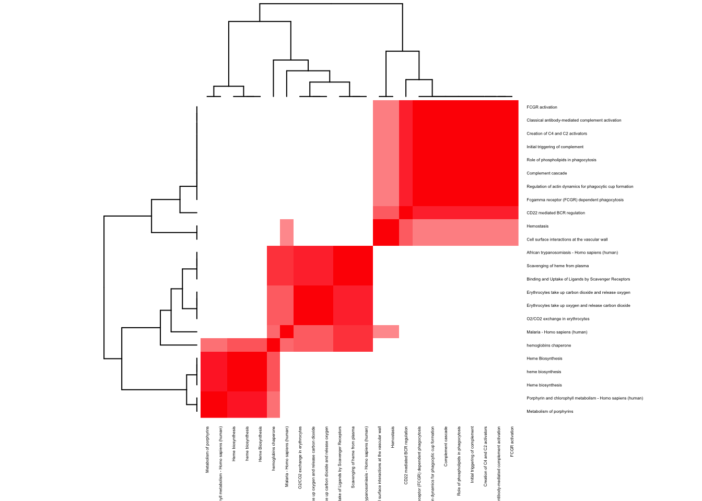

Gene Set Enrichment Analysis : GRN545 MCC data
Kushal K Dey
8/10/2017
We perform gene set enrichment analysis of the driving genes in the HIV dataset.
Countlust output.
topic_clus <- get(load("../output/maptpx_GS_PBMC_2_2016_GRN0535_tpx.rda"))indices <- ExtractTopFeatures(topic_clus[[2]]$theta, top_features = 50, method = "poisson", options = "max")
imp_genes <- apply(indices, 1, function(x) return(rownames(topic_clus[[2]]$theta)[x]))We save the results
GRN535 - [K=2]
pathway analysis (cluster 1)
## [1] Neutrophil degranulation
## [2] Innate Immune System
## [3] Immune System
## [4] Regulation of TLR by endogenous ligand
## [5] Endogenous TLR signaling
## [6] Regulation of Actin Cytoskeleton
## [7] Metal sequestration by antimicrobial proteins
## [8] G13 Signaling Pathway
## [9] Vitamin D Receptor Pathway
## [10] Fas Ligand (FasL) pathway and Stress induction of Heat Shock Proteins (HSP) regulation
## 44 Levels: antigen processing and presentation ...pathway analysis (cluster 2)
## [1] hemoglobins chaperone
## [2] Erythrocytes take up oxygen and release carbon dioxide
## [3] Erythrocytes take up carbon dioxide and release oxygen
## [4] O2/CO2 exchange in erythrocytes
## [5] Cell surface interactions at the vascular wall
## [6] Malaria - Homo sapiens (human)
## [7] Scavenging of heme from plasma
## [8] Classical antibody-mediated complement activation
## [9] FCGR activation
## [10] Creation of C4 and C2 activators
## 33 Levels: African trypanosomiasis - Homo sapiens (human) ...
GRN535 - [K=3]
indices <- ExtractTopFeatures(topic_clus[[3]]$theta, top_features = 50, method = "poisson", options = "max")
imp_genes <- apply(indices, 1, function(x) return(rownames(topic_clus[[3]]$theta)[x]))We save the results
pathway analysis (cluster 1)
## [1] Immunoregulatory interactions between a Lymphoid and a non-Lymphoid cell
## [2] Translation Factors
## [3] Immune System
## [4] Eukaryotic Translation Elongation
## [5] Protein methylation
## [6] IL12-mediated signaling events
## [7] Hemostasis
## [8] CD22 mediated BCR regulation
## [9] Regulation of actin dynamics for phagocytic cup formation
## [10] Fcgamma receptor (FCGR) dependent phagocytosis
## 52 Levels: Adaptive Immune System ...pathway analysis (cluster 2)
## [1] Neutrophil degranulation
## [2] Innate Immune System
## [3] Immune System
## [4] IL6-mediated signaling events
## [5] Endogenous TLR signaling
## [6] EGFR1
## [7] Prostaglandin Synthesis and Regulation
## [8] Metal sequestration by antimicrobial proteins
## [9] Toll-Like Receptors Cascades
## [10] Oncostatin_M
## 35 Levels: Antimicrobial peptides ... Vitamin D Receptor Pathwaypathway analysis (cluster 3)
l <- 3
pathway2 <- read.delim(paste0("../utilities/GRN535/cluster_3/gene_names_clus_", l, ".tab"))
head(pathway2$pathway, 10)## [1] Erythrocytes take up oxygen and release carbon dioxide
## [2] hemoglobins chaperone
## [3] Erythrocytes take up carbon dioxide and release oxygen
## [4] O2/CO2 exchange in erythrocytes
## [5] Malaria - Homo sapiens (human)
## [6] Scavenging of heme from plasma
## [7] African trypanosomiasis - Homo sapiens (human)
## [8] Binding and Uptake of Ligands by Scavenger Receptors
## [9] Metabolism of porphyrins
## [10] Cell surface interactions at the vascular wall
## 17 Levels: African trypanosomiasis - Homo sapiens (human) ...if(length(which(pathway2$q.value < 0.005)) > 2){
pathway2 <- pathway2[which(pathway2$q.value < 0.005),]
}
maxpath <- 75
pathway <- pathway2[1:min(maxpath, dim(pathway2)[1]), ]
ensembl_genes <- pathway$members_input_overlap
pathway_list_genes <- sapply(ensembl_genes, function(x) return(strsplit(as.character(x), "; ")))
all_genes <- Reduce(union, pathway_list_genes)
pathway_mat <- matrix(0, length(pathway_list_genes), length(all_genes))
for(l in 1:dim(pathway_mat)[1]){
pathway_mat[l, match(pathway_list_genes[[l]], all_genes)] <- 1
}
pathway_bimat <- (pathway_mat)%*%t(pathway_mat)
pathway_bimat_prop <- diag(1/sqrt(diag(pathway_bimat)), dim(pathway_bimat)[1]) %*% pathway_bimat %*% diag(1/sqrt(diag(pathway_bimat)), dim(pathway_bimat)[1])
col=c(rev(rgb(seq(1,0,length=1000),1,seq(1,0,length=1000))),
rgb(1,seq(1,0,length=1000),seq(1,0,length=1000)))
heatmap(pathway_bimat_prop, labRow = pathway$pathway, labCol = pathway$pathway, cexRow = 0.3, cexCol = 0.3, col = col, zlim = c(-1,1),
scale = "none", margins = c(5, 5))GRN535 - [K=6]
indices <- ExtractTopFeatures(topic_clus[[6]]$theta, top_features = 50, method = "poisson", options = "max")
imp_genes <- apply(indices, 1, function(x) return(rownames(topic_clus[[6]]$theta)[x]))We save the results
pathway analysis (cluster 1)
## [1] Immunoregulatory interactions between a Lymphoid and a non-Lymphoid cell
## [2] Adaptive Immune System
## [3] IL12-mediated signaling events
## [4] Downstream signaling in naïve CD8+ T cells
## [5] Natural killer cell mediated cytotoxicity - Homo sapiens (human)
## [6] Immune System
## [7] Graft-versus-host disease - Homo sapiens (human)
## [8] TCR signaling in naïve CD8+ T cells
## [9] ras-independent pathway in nk cell-mediated cytotoxicity
## [10] TCR signaling
## 43 Levels: activation of csk by camp-dependent protein kinase inhibits signaling through the t cell receptor ...pathway analysis (cluster 2)
## [1] CD22 mediated BCR regulation
## [2] Antigen activates B Cell Receptor (BCR) leading to generation of second messengers
## [3] Cell surface interactions at the vascular wall
## [4] Translation
## [5] Translation Factors
## [6] Eukaryotic Translation Elongation
## [7] BCR
## [8] Signaling by the B Cell Receptor (BCR)
## [9] B cell receptor signaling
## [10] Hemostasis
## 61 Levels: 3, -UTR-mediated translational regulation ...pathway analysis (cluster 3)
## [1] Regulation of Actin Cytoskeleton
## [2] TCR
## [3] mRNA Splicing - Major Pathway
## [4] mRNA Splicing
## [5] mRNA Processing
## [6] Regulation of actin cytoskeleton - Homo sapiens (human)
## [7] Spliceosome - Homo sapiens (human)
## [8] lactate fermentation (reoxidation of cytosolic NADH)
## [9] EGFR1
## [10] Processing of Capped Intron-Containing Pre-mRNA
## 77 Levels: Activation of DNA fragmentation factor ...pathway analysis (cluster 4)
## [1] Neutrophil degranulation
## [2] Innate Immune System
## [3] Immune System
## [4] Platelet activation, signaling and aggregation
## [5] Microglia Pathogen Phagocytosis Pathway
## [6] Platelet degranulation
## [7] Response to elevated platelet cytosolic Ca2+
## [8] miR-targeted genes in leukocytes - TarBase
## [9] Hemostasis
## [10] alternative complement pathway
## 39 Levels: alternative complement pathway ...pathway analysis (cluster 5)
## [1] Neutrophil degranulation
## [2] Toll-Like Receptors Cascades
## [3] Spinal Cord Injury
## [4] Regulation of TLR by endogenous ligand
## [5] Endogenous TLR signaling
## [6] Innate Immune System
## [7] MyD88:Mal cascade initiated on plasma membrane
## [8] Toll Like Receptor TLR1:TLR2 Cascade
## [9] Toll Like Receptor TLR6:TLR2 Cascade
## [10] Toll Like Receptor 2 (TLR2) Cascade
## 62 Levels: Activated TLR4 signalling ... Vitamin D Receptor Pathwaypathway analysis (cluster 6)
## [1] hemoglobins chaperone
## [2] Erythrocytes take up oxygen and release carbon dioxide
## [3] Erythrocytes take up carbon dioxide and release oxygen
## [4] O2/CO2 exchange in erythrocytes
## [5] Malaria - Homo sapiens (human)
## [6] Metabolism of porphyrins
## [7] heme biosynthesis
## [8] Heme Biosynthesis
## [9] Heme biosynthesis
## [10] Scavenging of heme from plasma
## 46 Levels: Acute Intermittent Porphyria ...
This R Markdown site was created with workflowr